ACTUALITÉS
Évènements sur mesure
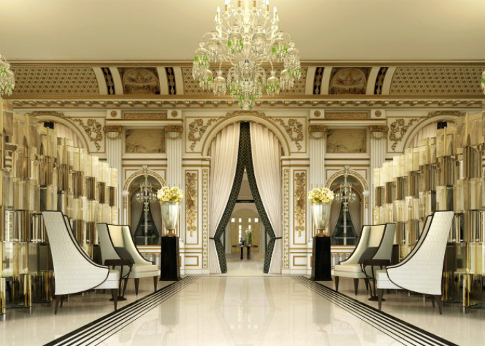Créés sur mesure pour vous, organisateurs d'événements en présentiel ou hybrides (réunion d'entreprises, convention, inventive ou teambuidling), ces rendez-vous réguliers vous livrent l’actualité parisienne sur un plateau : cueillez-y dès aujourd’hui des idées et démarquez-vous de vos concurrents en proposant une touche nouvelle (disruptive parfois !) dans les programmes de vos prochains événements dans la capitale !
Ouverture du Chambord
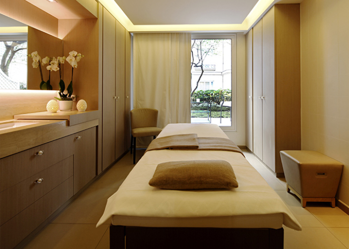À l'occasion de son ouverture, l'hôtel Chambord du boulevard Raspail et Le Figaro Voyage vous invitent à tenter votre chance pour remporter un séjour inoubliable au cœur de Saint-Germain des Prés.
Salons professionnels
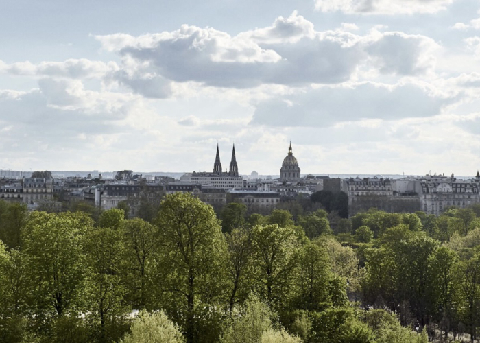Chaque année, plus de 400 salons professionnels et mixtes, se tiennent sur les nombreux centres de congrès et d’expositions parisiens. Mode, art, culture, beauté, automobile, informatique, télécommunications, industrie, tourisme, vie sociale… Les thèmes abordés sont vastes et les programmations riches ! Retrouvez ci-dessous la liste des grands salons professionnels à Paris pour les prochains mois, pour prévoir et organiser aux mieux vos déplacements à Paris.
Paris vous attend
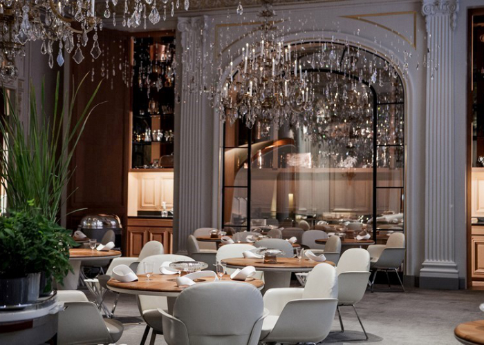L’Office du Tourisme et des Congrès de Paris et les professionnels parisiens vous attendent avec impatience et sont prêts à faire de votre venue un moment unique. Evénements inédits, ouvertures de nouvelles pépites… la capitale vous réserve de nombreuses surprises à découvrir dès que la situation le permettra. Nous avons hâte de vous retrouver !
Le Chambord ouvre ses portes
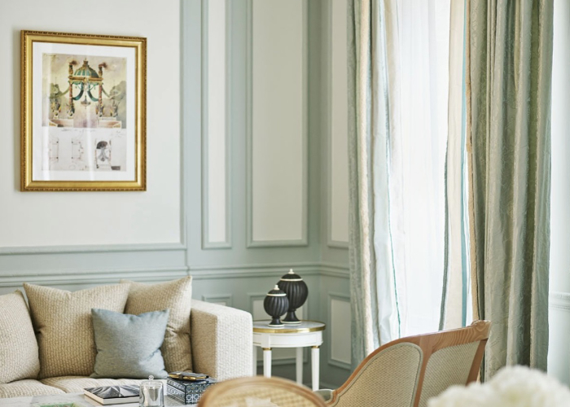Après quatre ans de travaux réalisés sous la houlette de Jean-Michel Wilmotte, architecte de renommée internationale, Le Chambord a ouvert ses portes en juillet 2021. Cet hôtel emblématique de la rive gauche, construit dans un style Art Déco, est situé au cœur de Paris. Le 5 étoiles, qui répond aujourd’hui aux critères de l’hôtellerie de luxe, compte 184 chambres, dont 47 suites, allant de 28 m² à 170 m², et six salons privatisables de 32 m² à 310 m². Le plus grand et le plus prestigieux, le Salon Cristal, accueille les cocktails jusqu’à 300 invités ou les repas assis jusqu’à 190 invités. Une belle hauteur sous plafond, de grandes baies vitrées, une technologie de pointe, et un accès direct depuis le Boulevard Raspail font de ce salon historique le lieu idéal pour votre événement coporate ou privé. L’hôtel Chambord et son équipe événementielle proposent des prestations sur-mesure pour l’organisation de séminaires ou la célébration de mariages. Parmi les grandes nouveautés : le spa Akasha de 700 m²et la brasserie Chambord avec une carte signée par le Chef triplement étoilé Gérald Passedat.
Positive Luxury
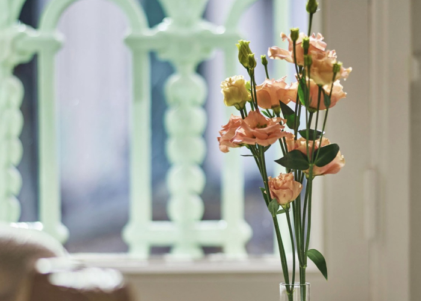Au Chambord, nous croyons qu'un monde meilleur reposera sur une culture mondiale basée sur la collaboration. Nous nous sommes donc associés à Positive Luxury, une communauté de marques de luxe soucieuse de la planète et de son avenir. La marque interactive proposée par Positive Luxury offre une transparence permettant aux consommateurs d'identifier les marques auxquelles ils peuvent faire confiance en fonction de leurs actions pour améliorer notre monde. Positive Luxury permet aux marques de partager leurs références en matière de développement durable en fournissant à nos clients des informations difficiles à trouver ailleurs qui, nous l'espérons, auront une influence positive sur la perception de l'hôtel Chambord et du groupe The Set Collection auquel il appartient.
La vie dans les Parcs
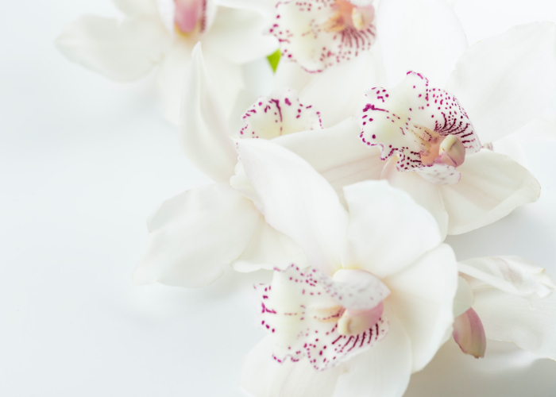L’été envahissant la ville, les nombreux parcs parisiens révèlent leurs plus belles couleurs avec les jardins en fleurs et inondés de soleil, dévoilant les meilleurs recoins pour pique-niquer. Ils forment ainsi des oasis de paix dans l’une des villes les plus vivantes du monde, dont chacune a son identité. Il y a le parc des Buttes-Chaumont, aménagé dans une ancienne carrière dotée de caractéristiques uniques tels qu’un temple au sommet d’un falaise et des cascades dans une grotte souterraine. Puis, il y a le fascinant jardin des Plantes sur la surprenante Rive gauche, avec ses quatre musées, ses jardins botaniques et son labyrinthe de haies. Enfin, le jardin des Tuileries, célèbre pour ses somptueux édifices, ses jardins décorés avec goût et ses splendides compositions florales qui lui ont valu d’entrer au patrimoine mondial de l’UNESCO en 1991.
Notre Brasserie Parisienne
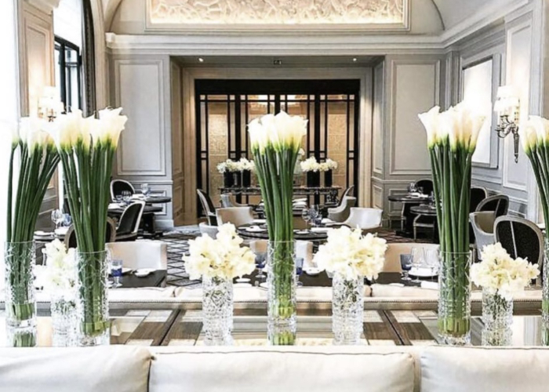La Brasserie Chambord, située au centre du quartier de Saint-Germain-des-Prés, épicentre de l’intellectualité et de la vie artistique Parisienne, répond à tous ces critères. Elle s’inscrit dans la liste des brasseries phares de la capitale tant par son emplacement, que par sa carte diversifiée et son ambiance conviviale. Au pied du « paquebot de la Rive gauche », la Brasserie Chambord est ancrée dans les esprits des germanopratins. La Brasserie respire, et attire les habitants du quartier ainsi que les parisiens d’un jour, pour sa modernité et son authenticité. Son Chef, Gérald Passedat, également chef du restaurant triplement étoilé 'Le Petit Nice' à Marseille, y propose les plats emblématiques de tradition accompagnés de suggestions iodées aux accents de Méditerranée.
Happy 4th July!
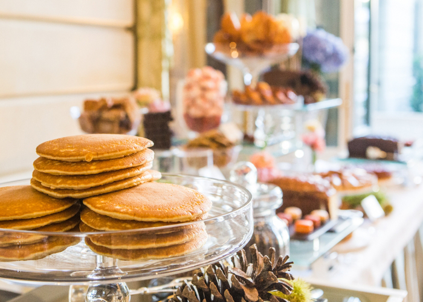Nous souhaitons à nos amis américains une très belle fête nationale. Ce fut un grand honneur pour notre Chef Exécutif, Benjamin Brial, de participer à la réception du 243ème anniversaire de l’Indépendance des Etats-Unis d’Amérique le 27 juin dernier à l’Ambassade des Etats-Unis en France aux côtés de l’Ambassadeur McCourt, entourée d’un superbe panel de célèbres Chefs français. Tous ce sont donnés une mission, mettre à l’honneur le thème de cette édition 2019 : la conquête spatiale et le premier pas sur la Lune ! Notre Chef a proposé une réalisation audacieuse, mettant à l’honneur la célèbre agence spatiale américaine : la NASA. Une recette sucrée gourmande : un cheesecake aux myrtilles avec une touche de noix de coco. Les invités ont eu le plaisir de rencontrer notre Chef et son équipe, et d’échanger ensemble sur cette recette, mais également sur la cuisine proposée au Restaurant Le Saint-Germain.
Guide shopping
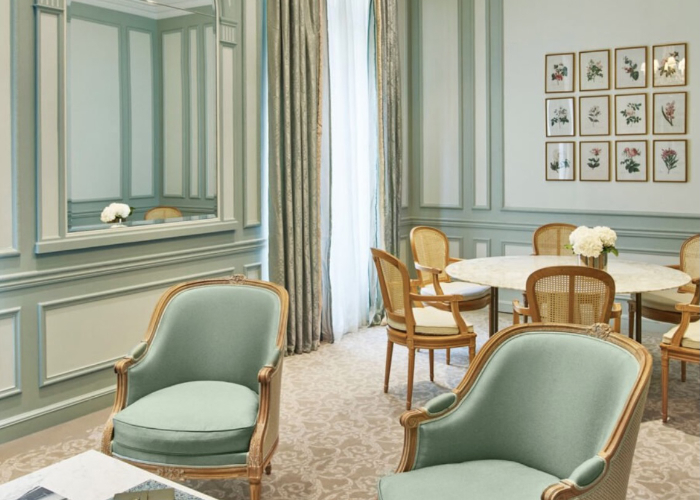La Rive gauche a beau être le centre culturel et artistique de Paris, c’est aussi un de ses meilleurs quartiers pour faire du shopping. Saint-Germain-des-Prés, le quartier Latin et le 7e arrondissement offrent une gamme attrayante de magasins, tant centrés sur la mode et les accessoires que sur les ameublements uniques et les boutiques spécialisées dans l’histoire. En face du Chambord sur le Square Boucicaut, vous trouverez un des tout premiers grands magasins du monde, Le Bon Marché, foyer des créateurs les plus renommés. C’est l’endroit parfait pour se promener lors d’une journée pluvieuse et pour explorer les dernières collections. La longue et pittoresque rue de Grenelle est aussi dotée d’une variété éclectique de boutiques de créateurs, principalement entre la rue de Sèvres et le boulevard Raspail, avec notamment le premier magasin de la très chic Parisienne Inès de la Fressange, ainsi que des marques internationales comme Prada, Ferragamo et Celine.. Entes autes.
L'Artiste, sa démarche Artistique
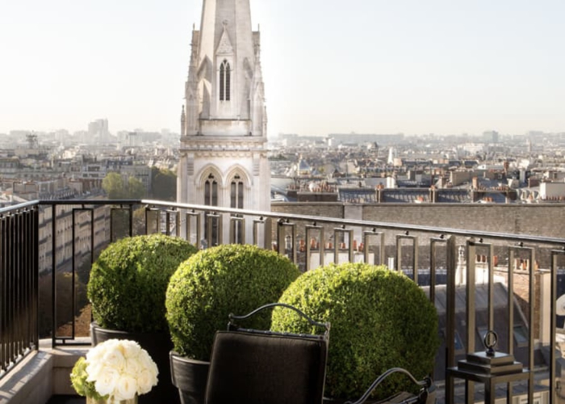Louis Vuitton et Jeff Koons, Versace et H&M, Lacoste et Supreme, Moncler et Off-White : la pop-culture s’est imposée comme un élément incontournable des marques de luxe. Aujourd’hui, Fred Allard se consacre principalement à sa série « Vide ton sac ». Pour cette démarche créative, l’artiste se rapproche d’une personnalité, qui consent à se dévoiler en divulguant ses objets fétiches, qui la caractérisent. Fred Allard les organise alors, les compose et les fige dans des inclusions de résines. Les objets intimes ainsi cristallisés se muent alors en oeuvres, véritables portraits figés. En multipliant ces collaborations, Fred Allard obtient davantage que des portraits : c’est une sociologie de la société actuelle qui se dessine et se sculpte, à travers le contenu des sacs de chacun.
Célébration
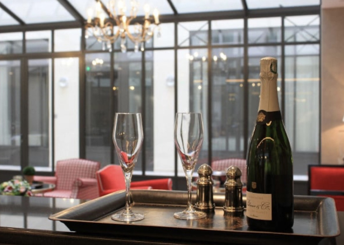La Maison Chambord célèbre les super-mamans, les wonder-papas ainsi que leur beauté, en leur proposant des soins exclusifs et sur-mesure dans le but de révéler la meilleure version d’eux-mêmes. Pour choyer celle qui prend soin de vous chaque jour, pour faire plaisir à celui qui vous aime de toute son âme et pour combler les papas et les mamans avec qui vous partagez chaque jour des moments inoubliables, nous avons pensé au cadeau idéal ! Et juste après le soin, pour prolonger cette pause hédoniste, une coupe de champagne* et de délicieux macarons sont à déguster dans notre jardin floral, véritable havre de paix où le temps s’arrête !
Des soins Masculins à l'hôtel Chambord
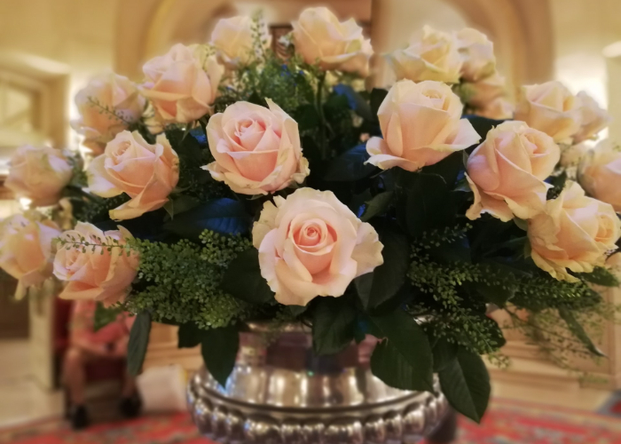Nouvelle jeunesse, nouveaux attraits. Depuis son ouverture en Mars, le célèbre hôtel du boulevard Raspail s'offre un spa de 700 m² - une première pour cet établissement - dont l'originalité est de répondre aux attentes spécifiques d'une clientèle masculine qui, habituée à se rendre à la piscine ou à la salle de fitness, n'hésite plus à pousser la porte d'une cabine de soins. «Les hommes font de plus en plus attention à eux, constate Nadia Seri Gobert, directrice du spa Akasha. Nous leur permettons de vivre ici des expériences 100 % masculines avec une approche globale qui associe le corps et l'esprit.»
Webinaire Thématiques
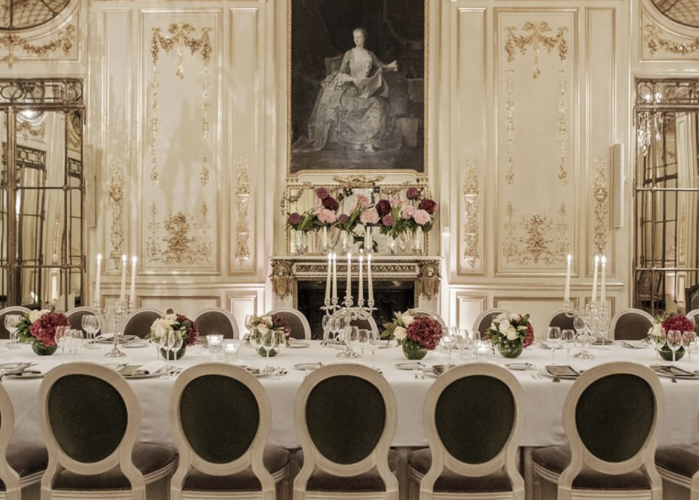Créés sur mesure pour vous, organisateurs d'événements en présentiel ou hybrides (réunion d'entreprises, convention, inventive ou teambuidling), ces rendez-vous réguliers vous livrent l’actualité parisienne sur un plateau : cueillez-y dès aujourd’hui des idées et démarquez-vous de vos concurrents en proposant une touche nouvelle (disruptive parfois !) dans les programmes de vos prochains événements dans la capitale !
Paris fait l'actu
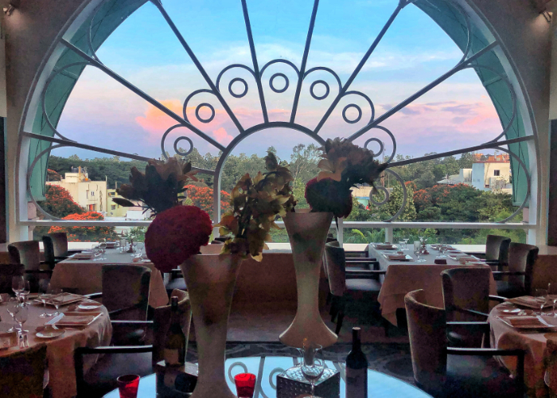Célébrations, événements, projets urbains… Paris ne cesse de faire parler d’elle ! C’est également la capitale mondiale de la médecine, de l’innovation et la première ville en matière d’accueil de congrès. Restez informés et retrouvez dans cette rubrique toute l’actualité faisant vibrer la destination et participant à son rayonnement dans le monde.